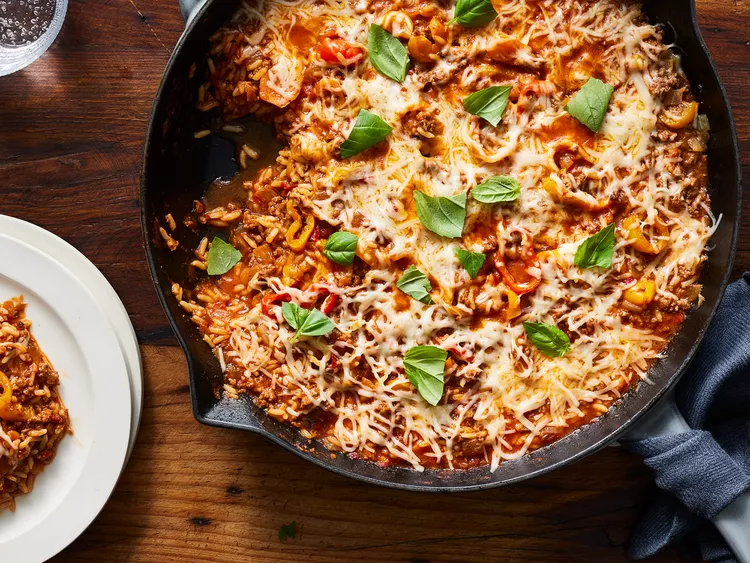

Unstuffed pepper skillet

Description
This unstuffed pepper skillet is much easier to make than actual stuffed peppers but packs just as much flavor. A super satisfying and delicious dish.
Ingrediants
- 2 tablespoons olive oil
- 8 ounces mini sweet peppers, sliced crosswise (about 10 peppers, mixed colors)
- 1 cup chopped yellow onion
- 1 pound lean ground sirloin (90/10)
- 1 tablespoon minced garlic
- 1 ½ teaspoons Italian seasoning
- 1 (15 ounce) can tomato sauce
- ¼ cup water
- 3 tablespoons hot cherry pepper hoagie spread (such as Cento)
- ¾ teaspoon kosher salt
- 1 (8.8 ounce) package microwavable white rice (such as Uncle Ben’s), crumbled
- cup shredded Italian cheese blend
- 2 tablespoons chopped fresh basil or flat-leaf parsley
Steps
- Heat oil in a large skillet over medium-high heat. Add peppers and onion; cook, stirring occasionally, until softened, about 4 minutes. Add beef and cook, stirring to crumble, until lightly browned, about 5 minutes. Season with garlic and Italian seasoning and cook, stirring constantly, until fragrant, about 1 minute. Stir in tomato sauce, water, hoagie spread, and salt.
- Bring to a boil over medium-high heat. Stir in rice until coated evenly with sauce. Cover, reduce heat to medium to maintain a simmer, and cook until rice and vegetables are tender, about 8 minutes, stirring once halfway through to prevent sticking.
- Uncover, remove from heat, and sprinkle with shredded cheese. Re-cover and let sit until cheese melts, 1 to 2 minutes. Serve hot sprinkled with basil or parsley.